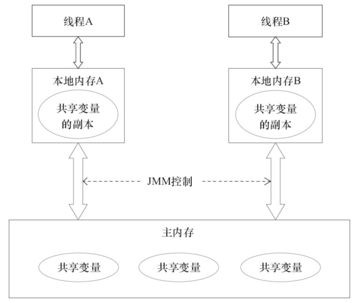

1. JMM的介绍
在上一篇文章中总结了线程的状态转换和一些基本操作，对多线程已经有一点基本的认识了，如果多线程编程只有这么简单，那我们就不必费劲周折的去学习它了。在多线程中稍微不注意就会出现线程安全问题，那么什么是线程安全问题？我的认识是，在多线程下代码执行的结果与预期正确的结果不一致，该代码就是线程不安全的，否则则是线程安全的。虽然这种回答似乎不能获取什么内容，可以google下。在<<深入理解Java虚拟机>>中看到的定义。原文如下：当多个线程访问同一个对象时，如果不用考虑这些线程在运行时环境下的调度和交替运行，也不需要进行额外的同步，或者在调用方进行任何其他的协调操作，调用这个对象的行为都可以获取正确的结果，那这个对象是线程安全的。
关于定义的理解这是一个仁者见仁智者见智的事情。出现线程安全的问题一般是因为主内存和工作内存数据不一致性和重排序导致的，而解决线程安全的问题最重要的就是理解这两种问题是怎么来的，那么，理解它们的核心在于理解java内存模型（JMM）。
在多线程条件下，多个线程肯定会相互协作完成一件事情，一般来说就会涉及到多个线程间相互通信告知彼此的状态以及当前的执行结果等，另外，为了性能优化，还会涉及到编译器指令重排序和处理器指令重排序。下面会一一来聊聊这些知识。
2. 内存模型抽象结构
线程间协作通信可以类比人与人之间的协作的方式，在现实生活中，之前网上有个流行语“你妈喊你回家吃饭了”，就以这个生活场景为例，小明在外面玩耍，小明妈妈在家里做饭，做晚饭后准备叫小明回家吃饭，那么就存在两种方式：
小明妈妈要去上班了十分紧急这个时候手机又没有电了，于是就在桌子上贴了一张纸条“饭做好了，放在...”小明回家后看到纸条如愿吃到妈妈做的饭菜，那么，如果将小明妈妈和小明作为两个线程，那么这张纸条就是这两个线程间通信的共享变量，通过读写共享变量实现两个线程间协作；
还有一种方式就是，妈妈的手机还有电，妈妈在赶去坐公交的路上给小明打了个电话，这种方式就是通知机制来完成协作。同样，可以引申到线程间通信机制。
通过上面这个例子，应该有些认识。在并发编程中主要需要解决两个问题：1. 线程之间如何通信；2.线程之间如何完成同步（这里的线程指的是并发执行的活动实体）。通信是指线程之间以何种机制来交换信息，主要有两种：共享内存和消息传递。这里，可以分别类比上面的两个举例。java内存模型是共享内存的并发模型，线程之间主要通过读-写共享变量来完成隐式通信。如果程序员不能理解Java的共享内存模型在编写并发程序时一定会遇到各种各样关于内存可见性的问题。
- 哪些是共享变量
在java程序中所有实例域，静态域和数组元素都是放在堆内存中（所有线程均可访问到，是可以共享的），而局部变量，方法定义参数和异常处理器参数不会在线程间共享。共享数据会出现线程安全的问题，而非共享数据不会出现线程安全的问题。关于JVM运行时内存区域在后面的文章会讲到。
- JMM抽象结构模型
我们知道CPU的处理速度和主存的读写速度不是一个量级的，为了平衡这种巨大的差距，每个CPU都会有缓存。因此，共享变量会先放在主存中，每个线程都有属于自己的工作内存，并且会把位于主存中的共享变量拷贝到自己的工作内存，之后的读写操作均使用位于工作内存的变量副本，并在某个时刻将工作内存的变量副本写回到主存中去。JMM就从抽象层次定义了这种方式，并且JMM决定了一个线程对共享变量的写入何时对其他线程是可见的。

如图为JMM抽象示意图，线程A和线程B之间要完成通信的话，要经历如下两步：
- 线程A从主内存中将共享变量读入线程A的工作内存后并进行操作，之后将数据重新写回到主内存中；
- 线程B从主存中读取最新的共享变量
从横向去看看，线程A和线程B就好像通过共享变量在进行隐式通信。这其中有很有意思的问题，如果线程A更新后数据并没有及时写回到主存，而此时线程B读到的是过期的数据，这就出现了“脏读”现象。可以通过同步机制（控制不同线程间操作发生的相对顺序）来解决或者通过volatile关键字使得每次volatile变量都能够强制刷新到主存，从而对每个线程都是可见的。
3. 重排序
一个好的内存模型实际上会放松对处理器和编译器规则的束缚，也就是说软件技术和硬件技术都为同一个目标而进行奋斗：在不改变程序执行结果的前提下，尽可能提高并行度。JMM对底层尽量减少约束，使其能够发挥自身优势。因此，在执行程序时，为了提高性能，编译器和处理器常常会对指令进行重排序。一般重排序可以分为如下三种：

- 编译器优化的重排序。编译器在不改变单线程程序语义的前提下，可以重新安排语句的执行顺序；
- 指令级并行的重排序。现代处理器采用了指令级并行技术来将多条指令重叠执行。如果不存在数据依赖性，处理器可以改变语句对应机器指令的执行顺序；
- 内存系统的重排序。由于处理器使用缓存和读/写缓冲区，这使得加载和存储操作看上去可能是在乱序执行的。
如图，1属于编译器重排序，而2和3统称为处理器重排序。这些重排序会导致线程安全的问题，一个很经典的例子就是DCL问题，这个在以后的文章中会具体去聊。针对编译器重排序，JMM的编译器重排序规则会禁止一些特定类型的编译器重排序；针对处理器重排序，编译器在生成指令序列的时候会通过插入内存屏障指令来禁止某些特殊的处理器重排序。
那么什么情况下，不能进行重排序了？下面就来说说数据依赖性。有如下代码：
double pi = 3.14 //A
double r = 1.0 //B
double area = pi * r * r //C
这是一个计算圆面积的代码，由于A,B之间没有任何关系，对最终结果也不会存在关系，它们之间执行顺序可以重排序。因此可以执行顺序可以是A->B->C或者B->A->C执行最终结果都是3.14，即A和B之间没有数据依赖性。具体的定义为：如果两个操作访问同一个变量，且这两个操作有一个为写操作，此时这两个操作就存在数据依赖性这里就存在三种情况：1. 读后写；2.写后写；3. 写后读，者三种操作都是存在数据依赖性的，如果重排序会对最终执行结果会存在影响。编译器和处理器在重排序时，会遵守数据依赖性，编译器和处理器不会改变存在数据依赖性关系的两个操作的执行顺序
另外，还有一个比较有意思的就是as-if-serial语义。
as-if-serial
as-if-serial语义的意思是：不管怎么重排序（编译器和处理器为了提供并行度），（单线程）程序的执行结果不能被改变。编译器，runtime和处理器都必须遵守as-if-serial语义。as-if-serial语义把单线程程序保护了起来，遵守as-if-serial语义的编译器，runtime和处理器共同为编写单线程程序的程序员创建了一个幻觉：单线程程序是按程序的顺序来执行的。比如上面计算圆面积的代码，在单线程中，会让人感觉代码是一行一行顺序执行上，实际上A,B两行不存在数据依赖性可能会进行重排序，即A，B不是顺序执行的。as-if-serial语义使程序员不必担心单线程中重排序的问题干扰他们，也无需担心内存可见性问题。
4. happens-before规则
上面的内容讲述了重排序原则，一会是编译器重排序一会是处理器重排序，如果让程序员再去了解这些底层的实现以及具体规则，那么程序员的负担就太重了，严重影响了并发编程的效率。因此，JMM为程序员在上层提供了六条规则，这样我们就可以根据规则去推论跨线程的内存可见性问题，而不用再去理解底层重排序的规则。下面以两个方面来说。
4.1 happens-before定义
happens-before的概念最初由Leslie Lamport在其一篇影响深远的论文（《Time，Clocks and the Ordering of Events in a Distributed System》）中提出，有兴趣的可以google一下。JSR-133使用happens-before的概念来指定两个操作之间的执行顺序。由于这两个操作可以在一个线程之内，也可以是在不同线程之间。因此，JMM可以通过happens-before关系向程序员提供跨线程的内存可见性保证（如果A线程的写操作a与B线程的读操作b之间存在happens-before关系，尽管a操作和b操作在不同的线程中执行，但JMM向程序员保证a操作将对b操作可见）。具体的定义为：
1）如果一个操作happens-before另一个操作，那么第一个操作的执行结果将对第二个操作可见，而且第一个操作的执行顺序排在第二个操作之前。
2）两个操作之间存在happens-before关系，并不意味着Java平台的具体实现必须要按照happens-before关系指定的顺序来执行。如果重排序之后的执行结果，与按happens-before关系来执行的结果一致，那么这种重排序并不非法（也就是说，JMM允许这种重排序）。
上面的1）是JMM对程序员的承诺。从程序员的角度来说，可以这样理解happens-before关系：如果A happens-before B，那么Java内存模型将向程序员保证——A操作的结果将对B可见，且A的执行顺序排在B之前。注意，这只是Java内存模型向程序员做出的保证！
上面的2）是JMM对编译器和处理器重排序的约束原则。正如前面所言，JMM其实是在遵循一个基本原则：只要不改变程序的执行结果（指的是单线程程序和正确同步的多线程程序），编译器和处理器怎么优化都行。JMM这么做的原因是：程序员对于这两个操作是否真的被重排序并不关心，程序员关心的是程序执行时的语义不能被改变（即执行结果不能被改变）。因此，happens-before关系本质上和as-if-serial语义是一回事。
下面来比较一下as-if-serial和happens-before:
as-if-serial VS happens-before
- as-if-serial语义保证单线程内程序的执行结果不被改变，happens-before关系保证正确同步的多线程程序的执行结果不被改变。
- as-if-serial语义给编写单线程程序的程序员创造了一个幻境：单线程程序是按程序的顺序来执行的。happens-before关系给编写正确同步的多线程程序的程序员创造了一个幻境：正确同步的多线程程序是按happens-before指定的顺序来执行的。
- as-if-serial语义和happens-before这么做的目的，都是为了在不改变程序执行结果的前提下，尽可能地提高程序执行的并行度。
4.2 具体规则
具体的一共有六项规则：
- 程序顺序规则：一个线程中的每个操作，happens-before于该线程中的任意后续操作。
- 监视器锁规则：对一个锁的解锁，happens-before于随后对这个锁的加锁。
- volatile变量规则：对一个volatile域的写，happens-before于任意后续对这个volatile域的读。
- 传递性：如果A happens-before B，且B happens-before C，那么A happens-before C。
- start()规则：如果线程A执行操作ThreadB.start()（启动线程B），那么A线程的ThreadB.start()操作happens-before于线程B中的任意操作。
- join()规则：如果线程A执行操作ThreadB.join()并成功返回，那么线程B中的任意操作happens-before于线程A从ThreadB.join()操作成功返回。
- 程序中断规则：对线程interrupted()方法的调用先行于被中断线程的代码检测到中断时间的发生。
- 对象finalize规则：一个对象的初始化完成（构造函数执行结束）先行于发生它的finalize()方法的开始。
下面以一个具体的例子来讲下如何使用这些规则进行推论：
依旧以上面计算圆面积的进行描述。利用程序顺序规则（规则1）存在三个happens-before关系：1. A happens-before B；2. B happens-before C;3. A happens-before C。这里的第三个关系是利用传递性进行推论的。A happens-before B,定义1要求A执行结果对B可见，并且A操作的执行顺序在B操作之前，但与此同时利用定义中的第二条，A,B操作彼此不存在数据依赖性，两个操作的执行顺序对最终结果都不会产生影响，在不改变最终结果的前提下，允许A，B两个操作重排序，即happens-before关系并不代表了最终的执行顺序。
5. 总结
上面已经聊了关于JMM的两个方面：1. JMM的抽象结构（主内存和线程工作内存）；2. 重排序以及happens-before规则。接下来，我们来做一个总结。从两个方面进行考虑。1. 如果让我们设计JMM应该从哪些方面考虑，也就是说JMM承担哪些功能；2. happens-before与JMM的关系；3. 由于JMM，多线程情况下可能会出现哪些问题？
5.1 JMM的设计

JMM是语言级的内存模型，在我的理解中JMM处于中间层，包含了两个方面：（1）内存模型；（2）重排序以及happens-before规则。同时，为了禁止特定类型的重排序会对编译器和处理器指令序列加以控制。而上层会有基于JMM的关键字和J.U.C包下的一些具体类用来方便程序员能够迅速高效率的进行并发编程。站在JMM设计者的角度，在设计JMM时需要考虑两个关键因素:
- 程序员对内存模型的使用 程序员希望内存模型易于理解、易于编程。程序员希望基于一个强内存模型来编写代码。
- 编译器和处理器对内存模型的实现 编译器和处理器希望内存模型对它们的束缚越少越好，这样它们就可以做尽可能多的优化来提高性能。编译器和处理器希望实现一个弱内存模型。
另外还要一个特别有意思的事情就是关于重排序问题，更简单的说，重排序可以分为两类：
- 会改变程序执行结果的重排序。
- 不会改变程序执行结果的重排序。
JMM对这两种不同性质的重排序，采取了不同的策略，如下。
- 对于会改变程序执行结果的重排序，JMM要求编译器和处理器必须禁止这种重排序。
- 对于不会改变程序执行结果的重排序，JMM对编译器和处理器不做要求（JMM允许这种 重排序）
JMM的设计图为：
 从图可以看出：
从图可以看出：
- JMM向程序员提供的happens-before规则能满足程序员的需求。JMM的happens-before规则不但简单易懂，而且也向程序员提供了足够强的内存可见性保证（有些内存可见性保证其实并不一定真实存在，比如上面的A happens-before B）。
- JMM对编译器和处理器的束缚已经尽可能少。从上面的分析可以看出，JMM其实是在遵循一个基本原则：只要不改变程序的执行结果（指的是单线程程序和正确同步的多线程程序），编译器和处理器怎么优化都行。例如，如果编译器经过细致的分析后，认定一个锁只会被单个线程访问，那么这个锁可以被消除。再如，如果编译器经过细致的分析后，认定一个volatile变量只会被单个线程访问，那么编译器可以把这个volatile变量当作一个普通变量来对待。这些优化既不会改变程序的执行结果，又能提高程序的执行效率。
5.2 happens-before与JMM的关系

一个happens-before规则对应于一个或多个编译器和处理器重排序规则。对于Java程序员来说，happens-before规则简单易懂，它避免Java程序员为了理解JMM提供的内存可见性保证而去学习复杂的重排序规则以及这些规则的具体实现方法
5.3 今后可能需要关注的问题
从上面内存抽象结构来说，可能出在数据“脏读”的现象，这就是数据可见性的问题，另外，重排序在多线程中不注意的话也容易存在一些问题，比如一个很经典的问题就是DCL（双重检验锁），这就是需要禁止重排序，另外，在多线程下原子操作例如i++不加以注意的也容易出现线程安全的问题。但总的来说，在多线程开发时需要从原子性，有序性，可见性三个方面进行考虑。J.U.C包下的并发工具类和并发容器也是需要花时间去掌握的，这些东西在以后得文章中多会一一进行讨论。
参考文献
《java并发编程的艺术》